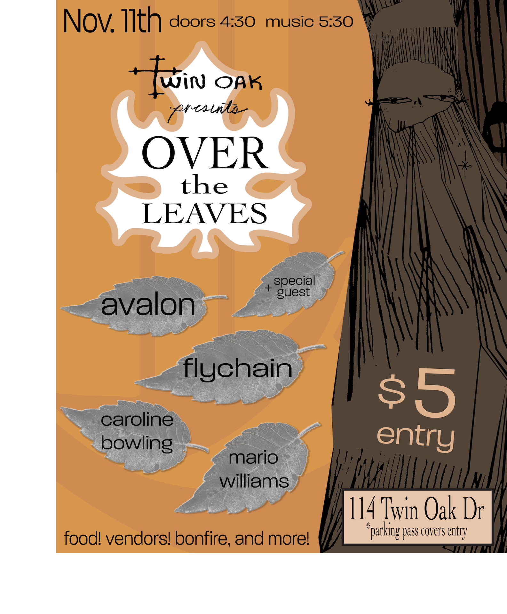
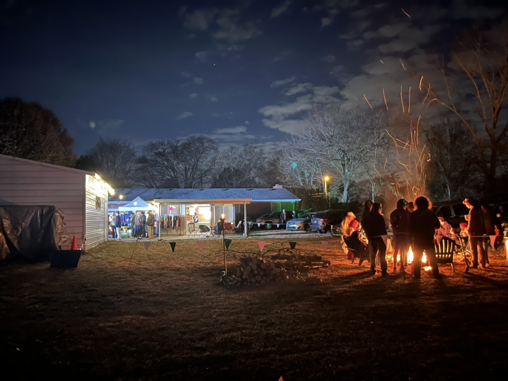

Over the Leaves
A DIY concert built around community, local bands, and creative collaboration. I coordinated logistics, promotion, and on-site execution — working with artists and partners to deliver our highest attended event at 140 tickets sold at the door. We offered on-site catering with hot cider, smores, and other deserts.



Video Recap